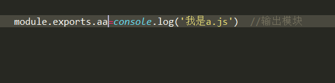
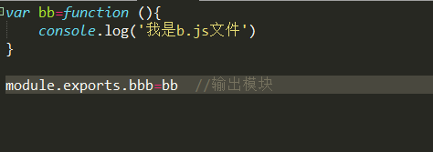
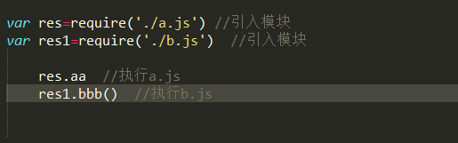

输出： commonjs中被引入的文件需要进行输出，方法是： module.exports.aa=aaa，这里的aaa指的是被引入的模块内容，将赋值给module.exports的一个变量，例如： 
 输入： 在使用引用的模块的时候需要先引入模块，再执行这个模块，例如：  var res=require('./a.js') var res1=require('./b.js') res.aa //执行引入的a.js res1.bbb() //执行引入的b.js